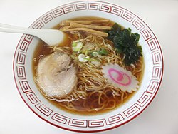

Ramen
Introduction
From Wikipedia, the free encyclopedia
Not to be confused with Ramyeon, Lamian, Instant noodles, or Ramune. This article is about the Japanese noodle dish. For the instant version and other uses, see Ramen (disambiguation).
Ramen

(/ˈrɑːmən/) (拉麺, ラーメン or らあめん, rāmen, [ɾaꜜːmeɴ]
ⓘ) is a Japanese noodle dish. It consists of Chinese-style wheat
noodles (中華麺, chūkamen) served in a broth. Common flavors are
soy sauce and miso, with typical toppings including sliced pork
(chāshū), nori (dried seaweed), menma (bamboo shoots), and
scallions. Ramen has its roots in Chinese noodle dishes and is a
part of Japanese Chinese cuisine.[1] Nearly every region in Japan
has its own variation of ramen, such as the tonkotsu (pork bone
broth) ramen of Kyushu and the miso ramen of Hokkaido.
The origins of ramen can be traced back to Yokohama Chinatown in
the early 20th century. The word "ramen" is a Japanese borrowing
of the Chinese word lamian (拉麵), meaning "pulled noodles", but
is not derived from the northern Chinese dish of lamian. Instead,
the dish evolved from southern Chinese noodle dishes from regions
such as Guangzhou, reflecting the demographics of Chinese settlers
in Yokohama. Ramen gained popularity in Japan, especially during
food shortages following World War II. In 1958, instant noodles
were invented by Momofuku Ando, further popularizing the dish.
Today, ramen is a cultural icon in Japan, with many regional
varieties and a wide range of toppings. Examples include Sapporo's
rich miso ramen, Hakodate's salt-flavored ramen, Kitakata's thick,
flat noodles in pork-and-niboshi broth, Tokyo-style ramen with
soy-flavored chicken broth, Yokohama's Iekei Ramen with soy
flavored pork broth, Wakayama's soy sauce and pork bone broth,
and Hakata's milky tonkotsu (pork bone) broth. Ramen is offered in
various establishments and locations, with the best quality usually
found in specialist ramen shops called ramenya (ラーメン屋).
Interface
Ramen's popularity has spread outside of Japan. In Korea, ramen is also known as its original name (라멘), having their own variation of the dish, ramyeon (라면). In China, ramen is called rìshì lāmiàn (日式拉面/日式拉麵 "Japanese-style lamian"). Ramen has also made its way into Western restaurant chains. Instant ramen was exported from Japan in 1971 and has since gained international recognition.
Etymology
The word ramen is a Japanese borrowing of the Mandarin Chinese
lamian (拉麵, 'pulled noodles').[2][3]
The word ramen (拉麺) first appeared in Japan in Seiichi Yoshida's
How to Prepare Delicious and Economical Chinese Dishes (1928).[4]
In the book, Yoshida describes how to make ramen using flour and
kansui, kneading it by hand, and stretching it with an illustration.
He also states that ramen is better suited for soup or cold
noodles than for baked noodles. In this case, however, ramen refers
to Chinese noodles, not the dish. The first mention of ramen as a
dish appears in Hatsuko Kuroda's Enjoyable Home Cooking (1947).[5]
Early ramen or ramen-like dishes went by different names, such as
Nankin soba (南京そば, lit. 'Nanjing noodles'), Shina soba (支那そば,
lit. 'Chinese noodles') or Chūka soba (中華そば, lit. 'Chinese
noodles').[6][7][8] For example, in 1903, in Yokohama Chinatown
(then known as Nanjing Town), there was a Nanjing noodle restaurant
(南京蕎麦所, Nankin soba dokoro).[9]
Until the 1950s, ramen was most commonly called Shina soba, but
today Chūka soba or just ramen (ラーメン) are more common, as the
word 支那 (Shina, meaning 'China') has acquired a pejorative
connotation through its association with anti-Chinese racism and
Japanese imperialism.[10]
TYPES
Noodles
Fresh ramen noodles
The type of noodles used in ramen are called chūkamen
(中華麺, lit. 'Chinese noodles'), which are derived from
traditional Chinese alkaline noodles known as jiǎnshuǐ miàn
(鹼水麵). Most chūkamen are made from four basic ingredients:
wheat flour, salt, water, and kansui [ja], derived from the
Chinese jiǎnshuǐ (鹼水), a type of alkaline mineral water
containing sodium carbonate and usually potassium carbonate,
as well as sometimes a small amount of phosphoric acid. Ramen
is not to be confused with different kinds of noodle such as soba,
udon, or somen